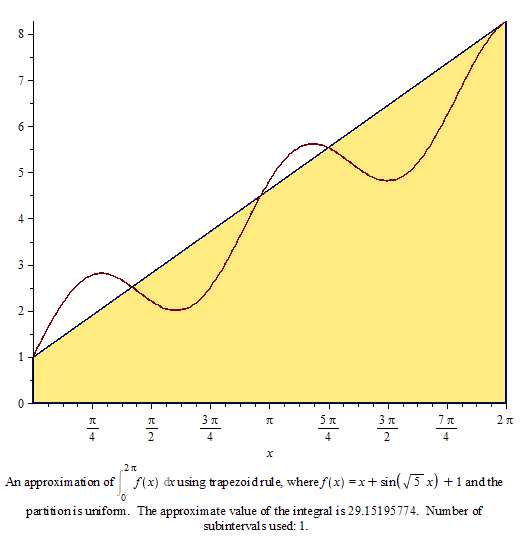
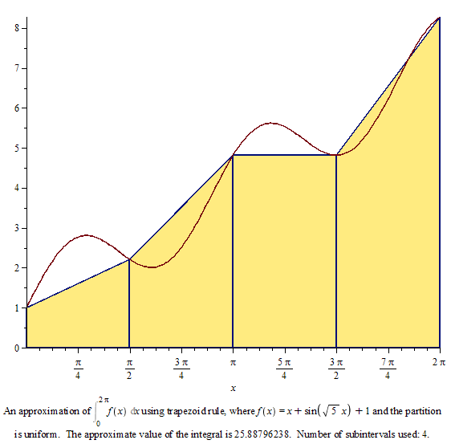
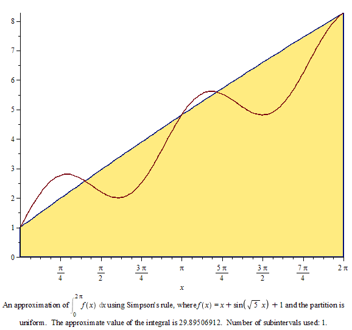
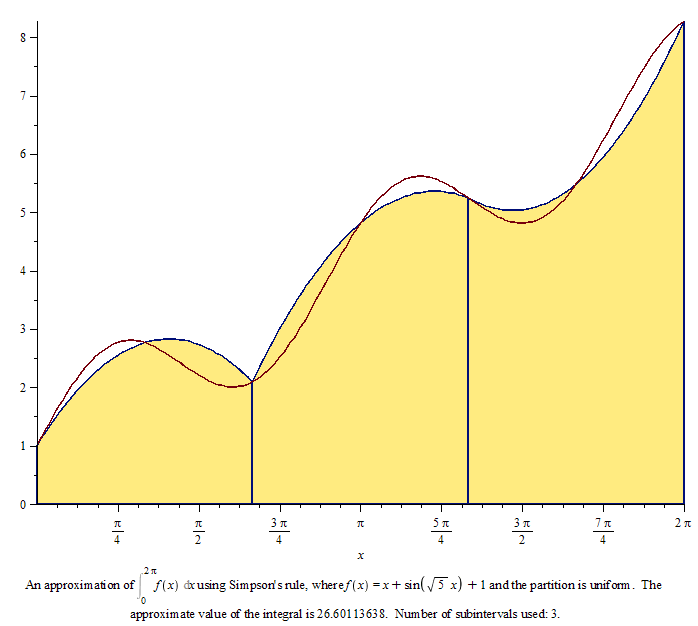
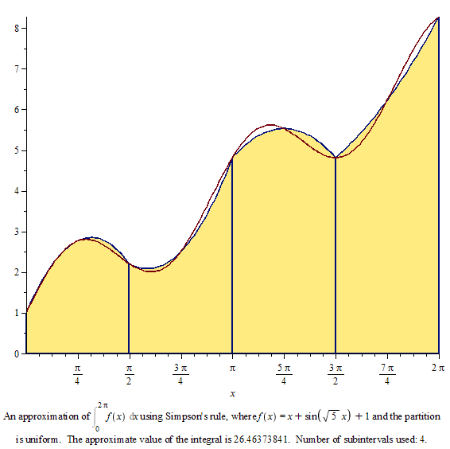

| > |
| > |
| > |
| (1) |
Formula (elementară) a trapezului
| > | ApproximateInt(x+sin(5^(1/2)*x)+1, 0 .. 2*Pi, 'partition' = 1, 'method' = trapezoid, 'partitiontype' = normal, 'output' = 'plot', 'boxoptions' = ['filled' = ['transparency' = .5]]); |
|  |
Formula repetată a trapezului (regula trapezelor)
| > | ApproximateInt(x+sin(5^(1/2)*x)+1, 0 .. 2*Pi, 'partition' = 4, 'method' = trapezoid, 'partitiontype' = normal, 'output' = 'plot', 'boxoptions' = ['filled' = ['transparency' = .5]]); |
|  |
Formula lui Simpson
| > | ApproximateInt(x+sin(5^(1/2)*x)+1, 0 .. 2*Pi, 'partition' = 2, 'method' = simpson, 'partitiontype' = normal, 'output' = 'plot', 'boxoptions' = ['filled' = ['transparency' = .5]]); |
|  |
Formula repetată a lui Simpson
| > | ApproximateInt(x+sin(5^(1/2)*x)+1, 0 .. 2*Pi, 'partition' = 6, 'method' = simpson, 'partitiontype' = normal, 'output' = 'plot', 'boxoptions' = ['filled' = ['transparency' = .5]]); |
|  |
| > | ApproximateInt(x+sin(5^(1/2)*x)+1, 0 .. 2*Pi, 'partition' = 8, 'method' = simpson, 'partitiontype' = normal, 'output' = 'plot', 'boxoptions' = ['filled' = ['transparency' = .5]]); |
|  |
| > |